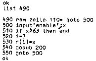
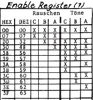
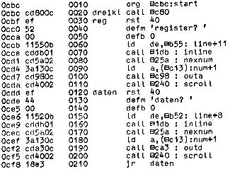

Nascom Journal |
Juli 1981 · Ausgabe 7 |
Die Steuerung durch den Hüllkurvengenerator funktioniert allerdings nur, wenn die Amplitudenregister richtig programmiert sind. Hierbei sind Bit 0 bis Bit 3 für die statische Lautstärke verantwortlich, Bit 4 für die Steuerung durch den Hüllkurvengenerator.
Das bedeutet praktisch: Werte zwischen 0 und 15 dez. beeinflussen die Lautstärke der entsprechenden Kanäle direkt. So kann man z.B. einen Klang erzeugen, bei dem die Lautstärke des Grundtones und der beiden „Obertöne“ verschieden ist, wie etwa bei natürlichen Instrumenten.Bei gesetztem Bit 4 wird die Lautstärke des jeweiligen Kanals nur von der Hüllkurve beeinflußt. Die Werte 16 bis 31 dez (10 bis 1F hex) ergeben also alle den gleichen, von der Hüllkurve gesteuerten Volumencharakter. Der Einfachheit halber sollte man sich also gleich für 16 (10) entscheiden.
Selbstverständlich kann auch ein Kanal statisch in der Lautstärke eingestellt werden, während man die anderen durch die Hüllkurve regeln läßt und umgekehrt. Die Register sind den Analogausgängen folgendermaßen zugeordnet:
| Register 8 | Kanal a | |
| Register 9 | Kanal b | |
| Register 10 | Kanal c |
Um die Amplitudenwerte zu testen, setzen Sie in das Testprogramm für die Hüllkurvenformen in Zeile 310 einfach 1=8 (oder entsprechend 9 bzw. 10)ein.
Dieses Register dürfte wohl das wichtigste sein, denn es entscheidet darüber, was überhaupt an die Analogausgänge gelangt.
Dabei bedeutet jedes nicht gesetzte Bit die Freigabe für einen bestimmten Klangerzeuger. Die Umrechnerei ist etwas zeitraubend. In der nachfolgenden Tabelle sehen Sie eine Zusammenstellung der verschiedenen Werte. Ein X bedeutet, daß der entsprechende Kanal an den Ausgang gelangt.Will ich nur den Tonkanal A programmieren, so muß in Register 7 62 dez (3E hex) eingespeichert werden.
test des enable registers


Jede Kombination zwischen 00 und 3F ist möglich.
Mit diesem Register müssen wir uns nicht lange aufhalten. Es steuert die „Rauschfrequenz“, d.h. es erzeugt hohes oder tiefes Rauschen. 5 Bit stehen zur Steuerung zur Verfügung, also Werte zwischen 0 und 31 dez.Sie können sich selbst ein Zusatzprogramm schreiben, das Ihnen die einzelnen Klangqualitäten demonstriert.
Alle oben beschriebenen Register können auch auf einfache Weise in Maschinensprache getestet werden. Dazu laden Sie zunächst das Testprogramm aus dem letzten Heft ab 0C80. Die Adresse 0C97 (Restart Befehl) wird zu C9 (Return) geändert. Jetzt ist das Programm zum Unterprogramm umfunktioniert, welches von nachfolgendem Programm (Start bei 0CBC ) aufgerufen wird.
test einzelner register

| Seite 9 von 20 |
|---|